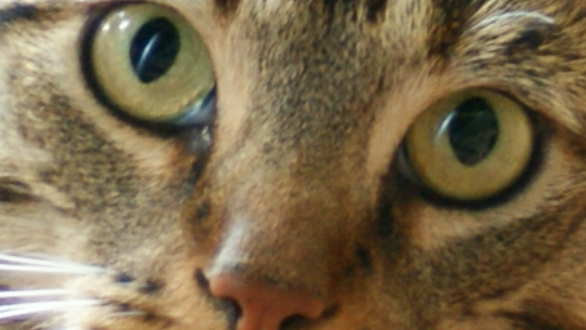

Over Quinten
Quinten is 20 jaar oud en woont in Spijkennise, zijn reistijd naar
school is 10 tot 15 minten. Quinten houd van het spelen van simulatie
games op zijn pc. Hij heeft de meeste uren op Train Simulator met 650
uur. In Train simulator kan je treinen besturen als of je een
machinist bent. Hij wou de opleiding doen om meer over coderen weten.
Hij houd er van om naar treinen te kijken vooral die van de Nederland.
Voor dat die de opleiding deed wist die nog niet zo veel van coderen.
Hij is ook geïntreseerd in Formule 1 en vindt het leuk om naar Max
Verstapen te kijken.

Hij heeft op dit moment geen baan. Hij luistert vaak naar de muziek
soort edm. Hij woont al zijn hele leven in Spijkenisse. En als laast
heeft die een kat.

Foto van Quinten's kat.